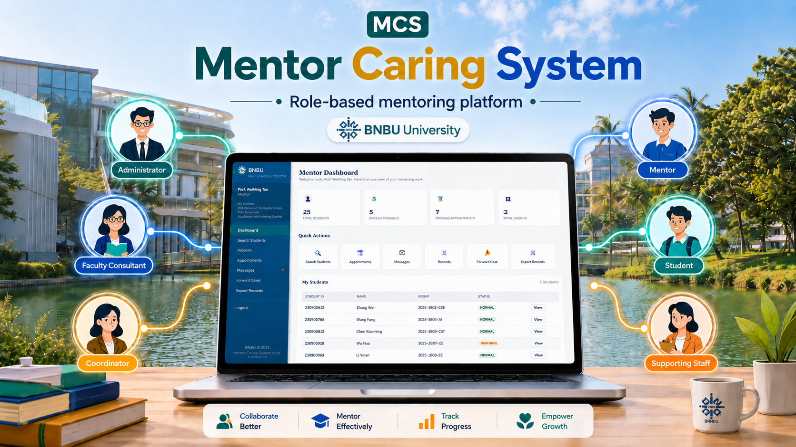
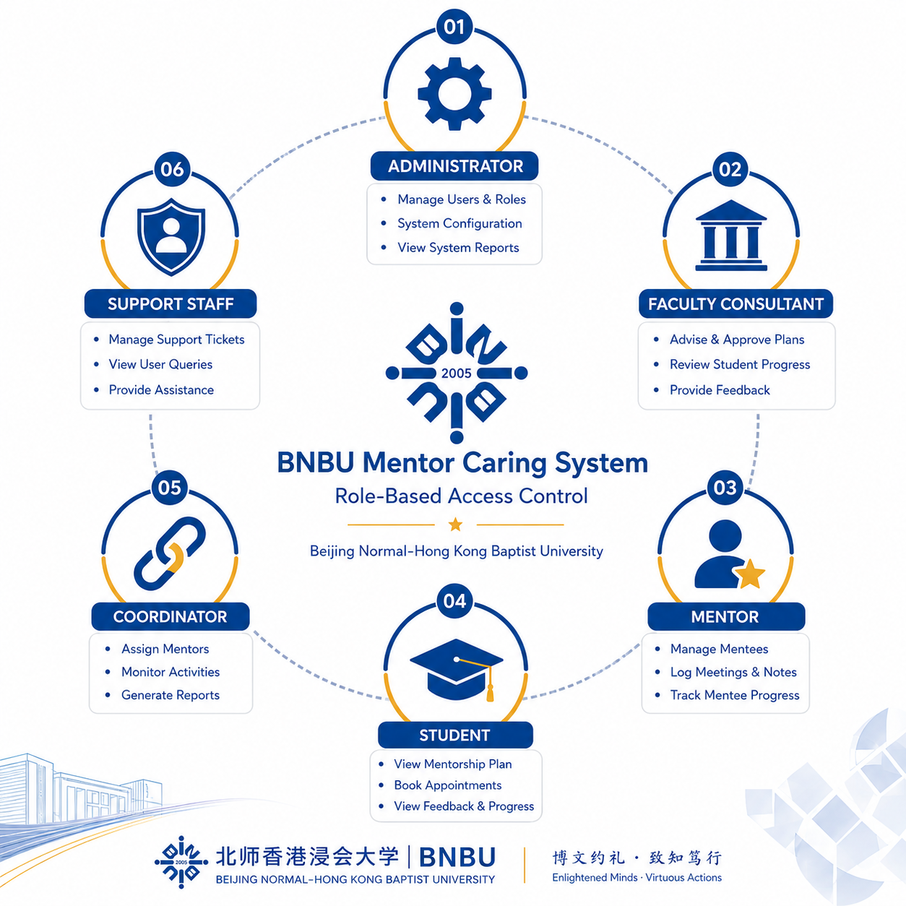
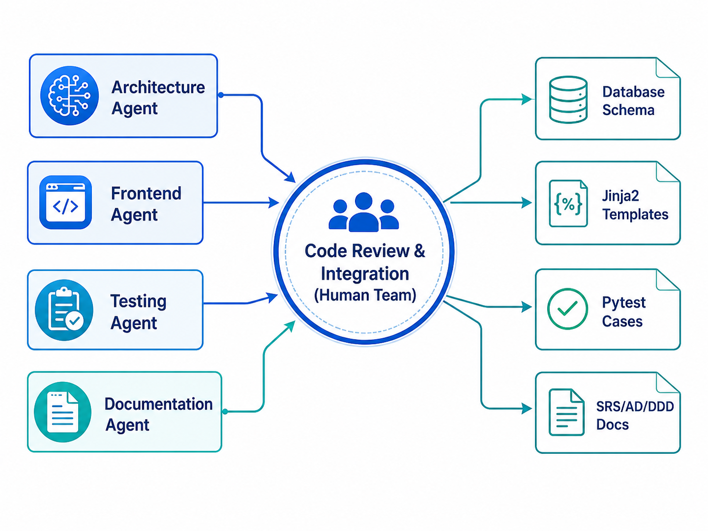

Mentor Caring System — Main Dashboard
As part of the Advanced Software Development Workshop (ASDW) and Software Engineering courses at BNBU (Beijing Normal University-Hong Kong Baptist University United International College), our team of six built a production-ready Mentor Caring System (MCS) — a role-based web application that digitizes the university's Mentor Caring Programme.
The Mentor Caring Programme pairs every student with an academic mentor for regular interviews, academic tracking, and personal guidance. Before MCS, this was managed through scattered spreadsheets and ad-hoc communication. Our system brings structure to this process with 6 user roles, appointment scheduling, interview records, internal messaging, case escalation workflows, and organizational structure management.
The backend is built on Flask with a custom 4-layer architecture inspired by MVC. We chose SQLite for zero-configuration deployment — the entire system runs from a single directory with no external database server. The frontend uses server-rendered Jinja2 templates with a custom CSS design system, deliberately avoiding heavy JavaScript frameworks to keep the project maintainable for future student teams.
We adopted a 4-layer architecture that cleanly separates concerns while remaining pragmatic for a team of six:
Request flows: Blueprint → Controller → DAO → SQLite
Blueprints (9 modules) handle HTTP routing for each user role plus REST APIs for appointments and messaging. Controllers (14 modules) encapsulate all business logic — from student-mentor group chaining to case escalation workflows. DAOs (15 modules) provide a clean data access layer with parameterized queries, preventing SQL injection. Models (20+ classes) define domain entities as plain Python objects.
A key design decision was keeping role-specific blueprints rather than a unified REST API — this maps naturally to how different users think about the system and made it easy to parallelize development across team members.
The system's core complexity lies in its permission model. Each of the 6 roles sees a fundamentally different interface:
Manages the organizational hierarchy — 4 faculties, 13 departments, 32 majors. Assigns faculty consultants and imports organizational data via Excel.
Oversees MCP groups within their faculty. Bulk-imports student lists, assigns mentors to groups, and exports interview records as Word documents.
Manages interview records for assigned students. Marks 30-minute availability slots, confirms/cancels appointments, and can forward problematic cases to coordinators.
Views mentor details, books appointments from mentor's available slots, and communicates with their assigned mentor through internal messaging.
Cross-department oversight. Searches students and mentors, receives forwarded cases, and escalates to faculty consultants when needed.
Read-only system audit. Views activity logs filtered by student, user, or date range. Manages user feedback with status tracking.

6-Role RBAC Model — Each role has a distinct scope and permission set
The permission model goes beyond simple role checks. For example, the student-group-mentor chain enforces cascading data integrity: adding a student to a group automatically syncs the group's mentor to the student; changing a group's mentor cascades to all members; removing a student from a group clears both group and mentor references. A student can only message their assigned mentor — not any other mentor in the system.
Mentors mark 30-minute slots within business hours (08:00–17:30). Students see available slots and book with one click. Mentors confirm and provide location details. The appointment state machine flows: Pending → Confirmed / Cancelled. This is implemented as a REST API with JSON responses, consumed by vanilla JavaScript on the frontend.
Each mentor-student interview generates a record with problem statement, discussion summary, and follow-up actions. Records are student-specific and build a complete history over the semester. Mentors have full CRUD access to their own records.
When a mentor identifies a student needing additional support beyond their capacity, they forward the case to the department coordinator. If the coordinator cannot resolve it, they escalate to the faculty consultant. This 3-tier escalation workflow mirrors the university's actual organizational hierarchy and ensures student issues reach the right level of attention.
A critical feature for real-world adoption: administrators and consultants can bulk-manage data through Excel files rather than manual entry. The import process is two-step: Upload → Preview (with conflict detection) → Confirm. The system detects conflicts (duplicate student IDs, mismatched departments) and offers skip/overwrite options before finalizing.
Every login, logout, and page visit is logged to log_activity. Support staff can search by student, user, and date range. Combined with the feedback management module (with status tracking: Open → In Progress → Resolved → Closed), the system provides full operational transparency.
What made this project unique was our development methodology. We structured our team as a human-AI hybrid software engineering team, using Claude Code, Codex, and DeepSeek V4 Pro as development agents. The AI agents were assigned specific roles mirroring a real software team:

AI Agent Team Workflow — Architecture, Frontend, Testing, and Documentation agents working in parallel
Architecture Agent designed database schemas and API contracts. Frontend Agent generated Jinja2 templates and CSS. Testing Agent wrote pytest cases for edge conditions. Documentation Agent maintained the complete SE documentation suite (SRS, AD, DDD, TP, TR). Each agent worked within the CLAUDE.md and AGENTS.md instruction files we crafted to maintain consistency.
The key insight: AI agents functioned as force multipliers, not replacements. We spent our time on code review, integration testing, and domain logic — the parts that require human judgment. The AI handled boilerplate, test case generation, and documentation formatting. Total token consumption exceeded 200 million tokens across all models, equivalent to processing roughly 150 million words of context.
Testing was not an afterthought. We wrote 183 pytest tests covering:
The test suite uses pytest fixtures to create isolated SQLite databases pre-seeded with test data, ensuring tests never interfere with each other. We used pytest-flask for request context and session simulation. Every test runs in under 2 seconds — the full suite completes in under a minute.
Beyond the code, we produced a full suite of software engineering documents following IEEE standards:
Domain-driven design pays off. Aligning our code structure with the university's actual organizational hierarchy (faculties → departments → majors → groups) made the system intuitive for stakeholders and simplified permission logic.
AI agents need clear contracts. The most effective AI contributions came when we provided precise interface specifications (function signatures, database schemas, template layouts). Vague prompts produced inconsistent results that required significant rework.
Test early, test often. The 183-test suite caught multiple regression bugs during the final integration week. The demo checklist tests served double duty as documentation for how each feature should work.
Excel import is harder than it looks. Handling malformed spreadsheets, duplicate entries, and partial imports with rollback semantics turned out to be one of the most complex features — and the one stakeholders valued most for real-world usability.
Team C03 "bobr" — BNBU, Spring 2026:
Special thanks to our course instructors for guidance throughout the semester, and to the BNBU Mentor Caring Programme office for providing real requirements and feedback during development.